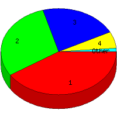

Week of 7/5/2009 to 7/11/2009: Top
5 of
5 File Types (Extensions)
Sorted by Access Count
Individual file types as determined by file extensions. All URLs that
do not contain an extension are counted as directories.

| Rank |
Type |
Accesses |
% |
Bytes |
% |
| 1 |
htm
|
66 |
40.99 |
243,387 |
10.17 |
| 2 |
jpg
|
48 |
29.81 |
1,904,933 |
79.57 |
| 3 |
Directory (folder)
|
35 |
21.74 |
86,625 |
3.62 |
| 4 |
gif
|
10 |
6.21 |
158,480 |
6.62 |
| 5 |
css
|
2 |
1.24 |
520 |
0.02 |